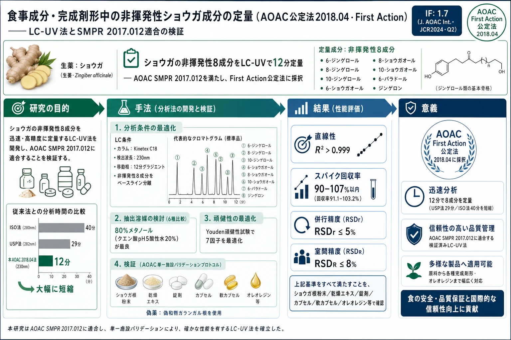

食事成分・完成剤形中の非揮発性ショウガ成分の定量（AOAC公定法2018.04・First Action）——LC-UV法とSMPR 2017.012適合の検証

<!-- You H, Ireland B, Moeszinger M, Zhang H, Snow L, Krepich S, Takagawa V. Determination of Select Nonvolatile Ginger Constituents in Dietary Ingredients and Finished Dosage Forms, First Action 2018.04. J AOAC Int 2020;103(1):124-131. doi:10.5740/jaoacint.19-0004 の全訳密度日本語版。 -->
補足（本サイトでの位置づけ）: 本論文は、生薬「ショウガ（生姜・ショウキョウ）」の主要な非揮発性活性成分（ジンゲロール類・ショウガオール類・パラドール・ジンゲロン）を定量する AOAC 公定法（Official Method 2018.04） の開発・検証を報告し、その方法本文を収載したものである。当サイトが扱う漢方・生薬 QC 論文の多くは中国の薬典・研究者による指紋分析やメソッド開発だが、本論文は 米国の公的分析化学者団体 AOAC INTERNATIONAL が国立衛生研究所（NIH）と連携して「標準法性能要件（SMPR）」を定め、それを満たす方法を公定法に採択する という、もう一つの品質保証の制度的枠組みを示す。とくに、①分析時間を USP 法29分・ISO 法40分から 12分 に短縮、②検出波長を 282/280 nm から 230 nm に最適化して S/N と分離を改善、③抽出溶媒・pH・酵素処理を系統比較し 80% メタノール＋クエン酸 pH5 を選定、④偽和物として知られるガランガル（Kaempferia galanga・南薑）根を偽薬（プラセボ）に用いて選択性を検証、という具体的な意思決定は、生薬メソッド開発の実務そのものである。なお本 PDF のダウンロード透かしには「by TSUMURA & Co. user on 08 July 2026」とあり、日本の漢方最大手ツムラがこの AOAC 公定法を参照していることが読み取れる。生姜は漢方頻用生薬（生姜・乾姜）であり、当サイトの生薬定量・メソッド開発論文群と直結する。
書誌情報
- 原題: Determination of Select Nonvolatile Ginger Constituents in Dietary Ingredients and Finished Dosage Forms, First Action 2018.04
- 和題（本稿）: 食事成分・完成剤形中の非揮発性ショウガ成分の定量（AOAC公定法2018.04・First Action）
- 著者: Hong You, Bailey Ireland, Michael Moeszinger, Haoshu Zhang（Eurofins Scientific, Inc., Petaluma, CA）／Laura Snow, Scott Krepich（Phenomenex, Inc., Torrance, CA）／Vivian Takagawa（ChromaDex, Inc., Irvine, CA）
- 責任著者: Hong You（hongyou@eurofinsus.com）
- 掲載誌: Journal of AOAC International 2020年, 103巻, 1号, 124–131頁
- DOI: 10.5740/jaoacint.19-0004
- 受理経緯: 2019年1月5日受付 / 2019年8月9日 PNB 受理承認
- 区分: DIETARY SUPPLEMENTS AND TRADITIONAL MEDICINE（栄養補助食品と伝統医療）
- 採択: AOAC ショウガ専門審査委員会（Expert Review Panel, ERP）が First Action Official Method として承認
- 雑誌インパクトファクター: 1.7（Journal of AOAC International・JCR2024・Q2）
- 注記: 原著 PDF のダウンロード記録に「by TSUMURA & Co. user on 08 July 2026」の透かしあり。
導入：AOAC SMPR という枠組み
産業界・規制当局・臨床研究者が栄養補助食品（dietary supplements）中の表示成分を決定するための 公的参照法（official references）としての信頼できる分析法 が必要とされたことから、AOAC INTERNATIONAL は 米国国立衛生研究所（NIH） と契約して利害関係者ワーキンググループを結成し、優先度の高い成分を特定して、メソッド開発・バリデーションのガイドラインとして 標準法性能要件（Standard Method Performance Requirements, SMPR®） を公表することとした。
ランダム化比較臨床試験により、ショウガ根茎（Zingiber officinale）が月経困難症（1）・肥満（2）・非アルコール性脂肪性肝疾患（3）の治療に有効であることが示唆されている。AOAC SMPR 2017.012（4）は、選択された非揮発性ショウガ成分の定量に関する最小メソッド性能を記述する。伝統的な非揮発性ショウガ成分として 6-、8-、10-ジンゲロール（gingerols）と 6-ショウガオール（shogaols） は必ず決定されなければならない。加えて、現代の栄養補助食品業界における 6-パラドール（paradol）とジンゲロン（zingerone） など他の非揮発性ショウガ成分の市場拡大のため、SMPR 2017.012 はこれらも定量できる方法を望ましいとする。
You ら（5）が開発・公表した方法は、綿密に設計され AOAC 2017.012 の全要件を満たした。そのため、評価を経て AOAC 専門審査委員会（ERP）は、この方法を First Action Official Method の地位で採択することを推奨した。本稿の目的は、AOAC SMPR の要件とこの方法の性能特性をレビューすることである。
訳者補足（AOAC の公定法プロセス）: AOAC INTERNATIONAL は「まず SMPR（この分析はこの性能を満たすべき、という数値目標）を定め、次にそれを満たす具体的方法を First Action（暫定採択）→ Final Action（正式採択）と段階的に公定法化する」という手順をとる。SMPR は「性能仕様書」、公定法は「その仕様を満たす実装」という関係。生薬・サプリメントは成分が複雑で偽和も多いため、こうした性能ベースの標準化が信頼性確保に重要となる。
SMPR 2017.012 と LC-UV 法
この方法は、いくつかの重要な因子最適化と単一施設バリデーション（single-laboratory validation）の対象となった。抽出手順における 7因子 を Youden 頑健性試験（Youden Ruggedness Trial） に従って評価し、最終的な試料前処理プロトコルを決定した（5）。要約すると、原料または完成製品中の標的分析対象の濃度に応じて、均質な試料を（粉砕するかしないかで）秤量し、検量線の中間水準の標準濃度を狙って、クエン酸で pH 5 とした 80% メタノール・20% 水（10 mL）と混合する。試料はボルテックスミキサーで混合、超音波処理、ろ過して HPLC 分析に供する。
8つの標的非揮発性ショウガ成分のベースライン分離 を、移動相 A に水、移動相 B にアセトニトリルを用いて達成した。分析時間は、国際標準化機構（ISO）法の40分・米国薬局方（USP）法の29分に対し、12分に短縮 した。検出波長は 230 nm に最適化され、USP ショウガモノグラフ法の 282 nm・ISO 法の 280 nm での結果と比べて、より良いピーク分離と S/N を提供した。研究結果は、混合標準溶液・ショウガ根茎試料の双方で干渉が無視できるクロマトグラムを示した（原著 Figure 1）。
この方法は AOAC 単一施設バリデーションプロトコルに従った。原料と完成製品の両方を含む10試料を試験し、多様な栄養補助食品マトリックスを代表させた。選択性・システム適合性・直線性・LOD/LOQ・真度・精度を SMPR 2017.012 に従って調べた。LOD・LOQ は原著 Table 1、真度・精度の結果は Table 2・Table 3 にまとめられている。
原著 Table 1：LOD と LOQ（IUPAC 法、AOAC 公定法 2018.04）
| 分析対象 | LOD, %(w/w) | LOQ, %(w/w) |
|---|---|---|
| ジンゲロン | 0.0023 | 0.0051 |
| 6-ジンゲロール | 0.0047 | 0.0103 |
| 8-ジンゲロール | 0.0022 | 0.0045 |
| 6-ショウガオール | 0.0012 | 0.0022 |
| 6-パラドール | 0.0023 | 0.0057 |
| 10-ジンゲロール | 0.0008 | 0.0015 |
| 8-ショウガオール | 0.0006 | 0.0006 |
| 10-ショウガオール | 0.0006 | 0.0011 |
原著 Table 4：AOAC SMPR 2017.012 要件と HPLC 法結果
（SMPR 必須分析対象＝6-/8-/10-ジンゲロールと 6-ショウガオール、必須マトリックス＝根茎粉末・根茎乾燥エキス・錠剤・カプセルの結果を要約。分析範囲は選択非揮発性ショウガ成分の総含量から算出。）
| パラメータ | 要件 | 6-ジンゲロール | 8-ジンゲロール | 6-ショウガオール | 10-ジンゲロール |
|---|---|---|---|---|---|
| 分析範囲 | 0.05–50%(w/w) | 0.02–50%(w/w) | |||
| LOQ | ≤0.05%(w/w) | 0.0103% | 0.0045% | 0.0022% | 0.0015% |
| 回収率 | 90–107% | 95.9–99.6% | 98.3–103.3% | 98.7–101.1% | 93.7–101.0% |
| RSDr（併行精度） | ≤5% | ≤2% | ≤3% | ≤2% | ≤2% |
| RSDR（室間精度） | ≤8% | ≤6% | ≤7% | ≤4% | ≤7% |
AOAC Official Method 2018.04（方法本文）
選択された非揮発性ショウガ成分の食事成分・完成剤形中の定量（First Action 2018）
A. 装置
(a) 分析天秤（分解能 0.0001 g）／(b) ミクロ天秤（分解能 0.002 mg）／(c) 全量ピペット（クラス A・各種サイズ）／(d) マイクロピペット／(e) ガラスパスツールピペット／(f) 褐色 VOA バイアル／(g) ガラス溶離液ボトル（1000 mL）／(h) 褐色オートサンプラーバイアル／(i) 超音波洗浄器／(j) ボルテックスミキサー／(k) メスフラスコ／(l) メスシリンダー／(m) pH メーター。
B. 試薬と材料
標準品の 6-ジンゲロール・8-ジンゲロール・10-ジンゲロール・6-ショウガオール・8-ショウガオール・10-ショウガオールは ChromaDex（Irvine, CA）提供。ジンゲロン、セルラーゼ（Aspergillus sp. 由来、1200 IU/mL、EC 3.2.1.4、Sigma C2605）、クエン酸（試薬グレード）は Sigma-Aldrich（St. Louis, MO）。6-パラドールは Dalton Research（Toronto, Canada）寄贈。HPLC グレードのメタノール・アセトニトリルは Fisher Scientific（Pittsburgh, PA）。
10試料（原著 Table 2018.04A）を、栄養補助食品（錠剤・カプセル・軟カプセル等）と食事成分（根茎粉末・乾燥エキス・オレオレジン）の両形態で、ランダム ID コードを割り当ててバリデーション研究に用いた。試料 251・099・986・740・692 は製造元からの寄贈。他は www.iHerb.com から購入。ショウガ根茎粉末試料（Botanical Reference Materials 30290-5）は ChromaDex から入手。試料は試験前に室温保存。
原著 Table 2018.04A：バリデーション・最適化研究に用いた試験試料
| ID | マトリックス | 形態 | 主成分 | 製造元／製品 | 推定含量(w/w) |
|---|---|---|---|---|---|
| 251 | 根茎粉末 | 原料 | ショウガ | USP・Powdered Ginger | 総非揮発性成分 1% |
| 099 | 根茎乾燥エキス | 原料 | ショウガ | Suan Farma・Ginger extract | 総成分 5% |
| 063 | 錠剤 | 完成品 | ショウガ | The Ginger People・Ginger Rescue（子供用チュアブル、3%ショウガ粉末） | 総成分 0.03% |
| 580 | カプセル | 完成品 | ショウガ | Now Foods・Ginger Root extract 250mg | 総成分 2.51% |
| 101 | 液体カプセル | 完成品 | Bacopa・カフェイン・シネフリン・ジンゲロン他 | Nutrex Research・Lipo6 Black | ジンゲロン 0.58% |
| 986 | 根茎オレオレジン（超臨界CO₂エキス） | 原料 | ショウガ | Shaanxi Guanjie・超臨界CO₂エキス | 総成分 50% |
| 648 | 筋肉回復サプリ粉末 | 完成品 | BCAA・カルニチン・パラドキシン（6-パラドール）他 | BPI sports・Best BCAA | 6-パラドール 0.01% |
| 889 | 軟カプセル | 完成品 | ウコン・ショウガ | Life Extension・Advanced Bio-Curcumin | 総成分 5.10% |
| 740 | 根茎粉末 | 原料 | ショウガ | NIST・SRM 3398（未公表） | 総成分 1% |
| 692 | 根茎乾燥エキス | 原料 | ショウガ | NIST・SRM 3399（未公表） | 不明 |
C. 標準溶液の調製
標準ストック溶液は、6-ジンゲロール 2.5±0.3 mg、8-ジンゲロール 0.75±0.08 mg、10-ジンゲロール 1.0±0.1 mg、6-ショウガオール 1.0±0.1 mg、8-ショウガオール 0.75±0.08 mg、10-ショウガオール 1.0±0.1 mg、6-パラドール 0.5±0.1 mg、ジンゲロン 1.0±0.1 mg を 20 mL 褐色 VOA バイアルに正確に秤量・移し、20.0 mL メタノールで希釈して調製。ストック溶液は使用まで冷凍庫保存（−20±2 °C で最大50日安定。データ非提示）。6点検量線を、標準ストック溶液を希釈して調製した。
D. 抽出の最適化
抽出条件最適化のため、ショウガ根茎粉末試料を検討材料に用いた。抽出溶媒〔メタノール；メタノール–水（80+20%, v/v）；メタノール–水（50+50%, v/v）；エタノール；酢酸エチル；ジクロロメタン–メタノール（50+50%, v/v）〕を、1時間の超音波処理（30分超音波→ボルテックス5秒→さらに30分超音波）で抽出効率について試験した。特に、メタノール–水（80+20%, v/v）は他の抽出溶媒（純メタノールを除く）より有意に高い抽出効率（P < 0.05） を示した（原著 Figure 2018.04A）。
抽出溶媒決定後、抽出溶媒中の酸性環境と酵素適用も同じショウガ根茎粉末で検討した。処理群：
- (a) 対照: 80% メタノール–20% 水を抽出溶媒に使用。
- (b) 酸性抽出: メタノールと混合する前にクエン酸溶液で水を pH 5 に調整し、80% メタノール–20% 水希釈液を作製。残りは対照と同じ。
- (c) 公表酵素法（6）: ショウガ粉末1 g あたり 0.5%(v/w) セルラーゼ溶液を使用、pH 5 の水中で反応。50 °C 水浴で1時間インキュベート後、メタノールを加えてさらに抽出。最終メタノール–水比 80:20%。残りは対照と同じ。
- (d) 最適酵素法: 酵素製造元の推奨（Sigma-Aldrich とのメール）に基づく反応条件。ショウガ粉末1 g あたり 0.5%(v/w) セルラーゼ、pH 8 の水中で反応。60 °C 水浴で1時間インキュベート後、メタノールを加えて抽出。最終メタノール–水比 80:20%。
結果は各処理群間で統計的有意差を示さなかったが、最良の抽出効率を理由に最終的に 酸性条件 を選定した。さらに、分析手順の因子最適化のため Youden 頑健性試験 を実施した（5）。要約すると、各試料を 10.0 mL の 80% メタノール:20% 水（水はクエン酸で pH 5 に酸性化）で希釈、ボルテックスで 1±0.1 分混合、冷水中で 30±3 分超音波（温度制御機能がなければ氷嚢で ≤30 °C 維持）、ボルテックス 5 秒、冷水中でさらに 30±3 分超音波、0.45 µm PTFE フィルターで褐色オートサンプラーバイアルにろ過。
E. 試料前処理
栄養補助食品・食事成分試料では、総非揮発性ショウガ成分の推定含量は 0.03〜50%(w/w) と変動しうる。これらはサプリメント処方または食事成分供給者の分析証明書から決定。試料/希釈液比の範囲と重要性が大きいため（5）、各試料の秤量量（原著 Table 2018.04B）を予想水準と検量線の中間水準に基づき調整した。ピーク面積を検量線内に収めるため、検量線溶液濃度の水準2〜4を狙って試料重量を計算。全マトリックスで希釈液の過飽和を避けるため最大試料重量は 1000 mg。
- (a) 根茎粉末・根茎乾燥エキス: 例——総非揮発性ショウガ成分 1% を予想するショウガ根茎粉末は 60±6 mg を正確に秤量し 20 mL 褐色 VOA バイアルへ。秤量前に均質化するまで十分混合、必要なら粉砕。
- (b) 錠剤・カプセル: 10錠/カプセル（殻除去）を複合・均質化まで粉砕。例——3% ショウガ粉末・総成分 0.03% を予想する錠剤は 1000±100 mg を秤量。
- (c) 液体カプセル・軟カプセル・オレオレジン: パスツールピペット・陽圧置換ピペット等で移す（軟カプセルは5カプセル分を混合・複合してから移す）。例——総成分 50% を予想するショウガオレオレジンはミクロ天秤で 1.5±0.2 mg 秤量。
秤量後、各試料を前述の最適化手順で抽出。
原著 Table 2018.04B：異なるマトリックス・予想含量の試料前処理指示（試料秤量量, mg）
| 予想含量%(w/w) | 根茎粉末・乾燥エキス | 錠剤・カプセル | 液体/軟カプセル・オレオレジン |
|---|---|---|---|
| 0.03 | NA | 1000±100 | 1000±25 |
| 0.3 | NA | 1000±100 | 250±25 |
| 1 | 60±6 | 300±30 | 75±8 |
| 5 | 12±3 | 60±6 | 15±2 |
| 50 | 1.2±0.3 | 6±0.6 | 1.5±0.2 |
F. HPLC 分析
二元ポンプとダイオードアレイ検出器（190–400 nm）を備えた Agilent 1260 HPLC（Agilent, Santa Clara, CA）を用いた。クロマトグラフィー分離には Kinetex C18 カラム（5 µm, 150×3 mm）と SecurityGuard Ultra カートリッジ（Phenomenex, Torrance, CA）を使用。最適装置条件：注入量 5.0 µL、カラム温度 30 °C、流速 1.1 mL/min、検出波長 230 nm。
移動相 A に水、B にアセトニトリルを用いたグラジエントプログラム：
| 時間(min) | %B |
|---|---|
| 0–1.5 | 35% B 保持 |
| 1.5–1.8 | 35→60% B |
| 1.8–5 | 60% B 保持 |
| 5–6.5 | 60→100% B |
| 6.5–9 | 100% B 保持 |
| 9–9.1 | 100→35% B |
| 9.1–12 | 35% B 保持 |
総分析時間 12.0 分。
G. 単一施設バリデーションパラメータ
(a) 選択性
主要標的マトリックス（ショウガ根茎食事成分、錠剤・カプセル栄養補助食品）について、「偽薬（Placebo）」を分析して選択性を実証した。ショウガ根茎を含まないと予想される食事試料が必要で、形態的類似性から ガランガル（Kaempferia galanga・aromatic ginger／南薑）根 をショウガ根茎マトリックスの偽薬に用いた。ガランガル根はショウガ根茎の 偽和物 ともみなされる（7）。また賦形剤ブレンド偽薬（50% マルトデキストリン、42% ヒドロキシプロピルメチルセルロース、5% ステアリン酸、2% ステアリン酸マグネシウム、1% 二酸化ケイ素）を処方し、一般的な錠剤・カプセルサプリの充填剤成分による潜在的クロマトグラフィー干渉を評価。
(b) システム適合性
全体のクロマトグラフィーシステム適合性を実証するため、8つの非揮発性ショウガ成分すべてについて標準物質溶液の5反復注入を実施。ピーク保持時間・ピーク面積・ピーク形状を解析。ピーク面積の RSD%、保持時間の RSD%、USP テーリング係数、各分析対象の 6-ジンゲロールに対する相対保持時間を算出。品質管理基準：標準物質ピーク面積 RSD% ≤2.5、保持時間 RSD% ≤2.5、全分析対象ピークの USP テーリング係数 <2.0。
(c) 直線性
各注入シーケンス開始時に6つの検量線溶液を注入。検量線の範囲：ジンゲロン 0.5–50 µg/mL、6-ジンゲロール 1.2–120 µg/mL、8-ジンゲロール 0.35–35 µg/mL、6-ショウガオール 0.5–50 µg/mL、6-パラドール 0.25–25 µg/mL、10-ジンゲロール 0.5–50 µg/mL、8-ショウガオール 0.35–35 µg/mL、10-ショウガオール 0.5–50 µg/mL。相関係数・傾き・y切片は HPLC データ処理ソフト（OpenLab CDS, ChemStation Edition, Rev. C.01.07 SR1）で自動生成。ブランクは検量線の一部とみなさない。各検量線は6データ点からなり、全曲線の R² は要件 NLT 0.999 を超えなければならない。
(d) LOD と LOQ
IUPAC 法（AOAC 推奨による）で LOD・LOQ を決定。ガランガル根から（別途調製した）ブランクマトリックス7反復のデータセットを使用。LOD は平均応答＋SD の3倍、LOQ は平均応答＋SD の10倍と定義。装置限度（mg/mL）を試料濃度で割って %w/w に換算。
(e) 真度
真度実証のため、ガランガル根（ショウガ根茎の「偽薬」）と賦形剤ブレンド（錠剤・カプセルサプリの「偽薬」）に、非揮発性ショウガ成分標準物質溶液を2水準でスパイク。スパイク回収実験は、試料秤量直後に既知濃度の標準物質溶液をスパイクして実施。3つの別々の試料調製（n=3）。希釈液は後で加え総抽出溶液量 10 mL とした。
(f) 精度
異なるマトリックスの8つの食事成分・サプリ（Table 2018.04A の最初の8試料）を測定して併行精度・再現性を実証。NIST 標準物質2試料（740・692）で真度・併行精度をさらに評価。併行精度は10試料すべてを Day1・分析者1・装置1で4反復（n=4）試験、各成分の日内結果・RSDr・HorRatr を算出。室間精度（中間精度）評価は、8つの食事成分・サプリ（ショウガ根茎・乾燥エキス・超臨界CO₂オレオレジン、錠剤・カプセル・液体軟カプセル）を標的マトリックスとし、2名の分析者が3日間・3台の装置で各試料4反復を調製（Run1: Day1/分析者1/装置1、Run2: Day2/分析者2/装置2、Run3: Day3/分析者2/装置3）。計12反復調製（n=12）を各試料タイプで精度決定。日間結果・再現性 RSDR・HorRatR を記録。
H. データ解析
Agilent ChemStation で各非揮発性ショウガ成分を自動決定：
$$ \text{試料中の分析対象\%} = \frac{\dfrac{\text{面積(試料)} - \text{切片}}{\text{検量線の傾き}}}{[\text{試料, mg/mL}]} \times 100\% $$
群間に有意差がある場合、一元配置分散分析（ANOVA）に続き Tukey 補正付き独立 t 検定で解析。全データは Statistix ソフト（version 10.0）で解析。
訳者補足（HorRat）: Table 2・3 に出る HorRat（Horwitz ratio）は、実測の RSD を Horwitz 式による期待 RSD で割った値で、分析法の精度が濃度水準に照らして妥当かを判断する AOAC の指標。おおむね HorRat が 0.5〜2.0 の範囲なら精度が許容範囲とされる。低濃度成分（<LOQ 近傍）では HorRat が大きくなりやすい。
主要結果：真度・精度データ
原著 Table 2：個別成分のスパイク回収結果（2スパイク水準・要約）
ガランガル根と賦形剤ブレンドの低・高2水準スパイク。総成分の平均回収率は、ガランガル根で低水準 96.82%・高水準 98.79%、賦形剤ブレンドで低水準 99.50%・高水準 99.90%。個別成分の回収率範囲は 91.11%（ジンゲロン低水準）〜103.23%（8-ジンゲロール低水準）で、いずれも SMPR 要件（90–107%）内。RSD はおおむね 1〜5% 台。
| 成分（例：ガランガル根 低水準） | 平均%(w/w) | RSD% | 平均回収率% |
|---|---|---|---|
| ジンゲロン | 0.022 | 1.76 | 91.11 |
| 6-ジンゲロール | 0.06 | 5.11 | 95.90 |
| 8-ジンゲロール | 0.021 | 5.48 | 103.23 |
| 6-ショウガオール | 0.022 | 4.93 | 101.03 |
| 6-パラドール | 0.014 | 3.61 | 95.81 |
| 10-ジンゲロール | 0.021 | 1.70 | 93.77 |
| 8-ショウガオール | 0.016 | 4.62 | 96.15 |
| 10-ショウガオール | 0.022 | 3.65 | 99.76 |
| 総成分 | 0.198 | 3.36 | 96.82 |
原著 Table 3：試験材料の精度結果（抜粋）
各試料の平均（740・692 を除く）は室間精度試験の12反復から算出。代表例：
- 試料251（USP ショウガ粉末）: 総成分 1.074%(w/w)、RSDr 1.15%・HorRatr 0.292、RSDR 2.52%・HorRatR 0.638。
- 試料099（ショウガ乾燥エキス）: 総成分 5.177%、RSDr 1.18%、RSDR 4.90%・HorRatR 1.571。
- 試料986（超臨界CO₂オレオレジン）: 総成分 40.175%、RSDr 0.12%、RSDR 1.19%。6-ジンゲロール 24.419%（最高含量）。
- 試料889（ウコン・ショウガ軟カプセル）: 総成分 5.469%、RSDr 1.05%、RSDR 4.14%。
- 試料740（NIST SRM 3398）: 総成分 0.796%（併行精度4反復）。
- 試料692（NIST SRM 3399）: 総成分 3.643%（併行精度4反復）。
（NA＝該当なし〈<LOQ〉、NT＝未試験。740・692 の平均は併行精度試験の4反復から算出。）
結果と考察（Results and Discussion）
SMPR 2017.012 の最小要件とこの方法の性能は原著 Table 4 にまとめた。この方法は表示分析対象に特異的（specific）で、システム適合性を満たし、検量線範囲（約 0.25–50 µg/mL）で直線的であった。LOQ で表されるメソッド限界は SMPR の 0.05% を下回った。高水準・低水準の両スパイク回収研究で真度を実証。全分析対象で回収率は SMPR 要件（90–107%）内かつ併行精度良好（RSDr ≤5%）。根茎粉末・根茎乾燥エキス・カプセル・錠剤を含むマトリックスで、併行精度・室間精度ともに全 SMPR 要件を満たした。したがって、この方法は表示された全分析対象・全必須マトリックスで真度・精度・適用性をもつと示された。慎重な評価の後、ERP はこれを First Action Official Method of Analysis として採択した。
参考文献（References）
- Rahnama P, Montazeri A, Huseini HF, Kianbakht S, Naseri M. BMC Complement Altern Med. 2012;12:92.
- Ebrahimzadeh Attari V, Asghari Jafarabadi M, Zemestani M, Ostadrahimi A. Phytother Res. 2015;29:1032–1039.
- Rahimlou M, Yari Z, Hekmatdoost A, Alavian SM, Keshavarz SA. Hepat Mon. 2016;16:e34897.
- Standard Method Performance Requirements (SMPR) 2017.012 (2017). J AOAC Int. 100:1192–1196.
- You H, Ireland B, Moeszinger M, Zhang H, Snow L, Krepich S, Takagawa V. Talanta 2019;194:795–802.
- Manasa D, Srinivas P, Sowbhagya H. Food Chem. 2013;139:509–514.
- American Herbal Products Association, Zingiber officinale (rhizome) (2018). botanicalauthentication.org.
参考文献
- Rahnama, P., Montazeri, A., Huseini, H.F., Kianbakht, S., & Naseri, M.
- Ebrahimzadeh Attari, V., Asghari Jafarabadi, M., Zemestani, M., & Ostadrahimi, A.
- Rahimlou, M., Yari, Z., Hekmatdoost, A., Alavian, S.M., & Keshavarz, S.A.
- Standard Method Performance Requirements (SMPR) 2017.012
- You, H., Ireland, B., Moeszinger, M., Zhang, H., Snow, L., Krepich, S., & Takagawa, V.
- Manasa, D., Srinivas, P., & Sowbhagya, H.
- American Herbal Products Association, Zingiber officinale (rhizome) (2018), http://www.botanicalauthentication.org/index. php/Zingiber_officinale_(rhizome) (accessed August 19, 2018) reference material peak must be less than 2.0 for all analyte peaks. (c) Linearity.—Six calibration solutions were injected at the beginning of each injection sequence. The calibration curves of the method cover the range of approximately 0.5–50 µg/mL for zingerone; 1.2–120 µg/mL for 6-gingerol; 0.35–35 µg/mL for 8-gingerol; 0.5–50 µg/mL for 6-shogaol; 0.25–25 µg/mL for 6-paradol; 0.5–50 µg/mL for 10-gingerol; 0.35–35 µg/mL for 8-shogaol; and 0.5–50 µg/mL for 10-shogaol. The correlation coefficients, calibration equation slopes, and y-intercepts were automatically generated by the HPLC data processing software [OpenLab CDS, ChemStation Edition, Rev. C.01.07 SR1 (110)]. The blank was not considered as a part of the calibration curve. Each calibration curve was made up of six data points, and the resulting R2 coefficients for all curves must exceed the requirement of NLT 0.999. (d) LOD and LOQ.—The International Union of Pure and Applied Chemistry method (under the recommendation by AOAC) was used to determine the LOD and LOQ of select nonvolatile ginger constituents. The data set from seven replications of blank matrix (prepared separately) from galangal root was used. LOD is defined as the sum of mean response and 3 times the SD. LOQ is defined as the sum of mean response and 10 times the SD. The instrument’s limits (mg/mL) are divided by the sample concentration to convert to a % w/w basis. (e) Accuracy.—To demonstrate method accuracy, galangal root (considered the “Placebo” of ginger rhizome) and the excipient blend (considered the “Placebo” of tablet and capsule dietary supplements) were spiked with nonvolatile ginger constituent reference material solutions at two different levels. The details of both “Placebo” samples have been described in Selectivity. The spike recovery experiment was performed by spiking the nonvolatile ginger constituent reference material solution (known concentration) immediately after weighing the samples. Three separate sample preparations were conducted (n = 3). The diluent was added afterward to make the total extraction solution volume 10 mL. (f ) Precision.—Eight dietary ingredients and supplements (first eight samples in Table 2018.04A) in different matrices were run to demonstrate the repeatability and reproducibility of the method. Two National Institute of Standards and Technology Standard Reference Material samples (sample 740 and 692) were tested to further evaluate the accuracy and repeatability of the method. All of the 10 dietary ingredients and supplements examined for repeatability were tested in quadruplicate (n = 4) in day 1 by analyst 1 on instrument 1. The within-day results, repeatability (RSDr), and HorRatr values for each nonvolatile ginger constituent were then calculated for all the materials investigated. For evaluating method intermediate precision, eight dietary ingredients [ginger rhizome, dry extract, oleoresin (super critical fluid CO2 soft extract)] and dietary supplements (tablets, capsule, liquid softgel capsule) were screened as target matrices. Three runs were conducted. Two analysts prepared four replicates of each sample, on 3 separate days, on three different instruments (Run 1: Day 1, Analyst 1, Instrument 1; Run 2: Day 2, Analyst 2, Instrument 2; Run 3: Day 3, Analyst 2, Instrument 3). A total of 12 replicate preparations (n = 12) were Yඈඎ ൾඍ ൺඅ.: Jඈඎඋඇൺඅ ඈൿ AOAC Iඇඍൾඋඇൺඍංඈඇൺඅ Vඈඅ. 103, No. 1, 2020 131 Downloaded from https://academic.oup.com/jaoac/article/103/1/124/5717530 by TSUMURA & Co. user on 08 July 2026